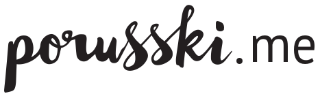

Главное, что нужно знать об этом месте, – шеф-поваром там работает Бруно Марино (ранее «Рыбка», Vesna, Peshi и другие), входящий в пятерку лучших московских итальянцев, бескомпромиссный приверженец классики и в конце концов природный сицилиец. Ресторан он открыл вместе со своей женой Ольгой Кудиновой, так что заведение вполне можно назвать семейным; семьей сюда лучше всего и идти, на полдня минимум.
Итальянское настроение пронизывает всех гостей мягкой, ненавязчивой волной с первых секунд. Приятная фоновая музыка на итальянском языке, небольшие элементы декора и сервировки, статусный винный шкаф во всю стену, на который невозможно не обратить внимания.
И еще раз про Италию: если физически вы в Москве, а мысленно — на солнечной Сицилии, вам в новый ресторан Il Siciliano на Кутузовском. Кухню возглавил итальянец Бруно Марино, который уже много лет живет и работает в Москве. Помимо вечной пасты и пиццы, в ресторан нужно идти за знаменитыми сицилийскими канноли на десерт.